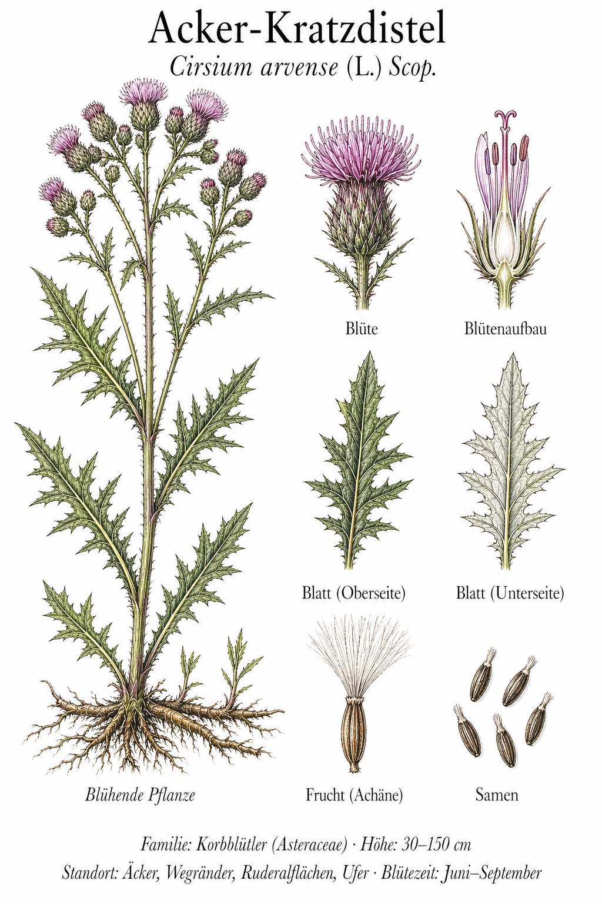
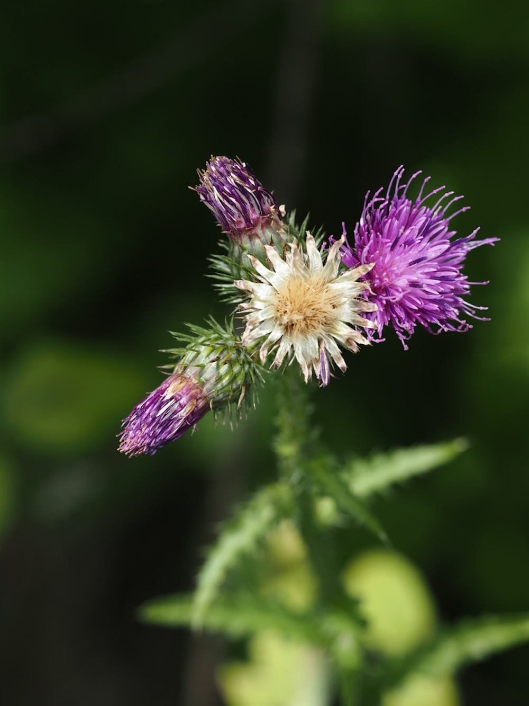
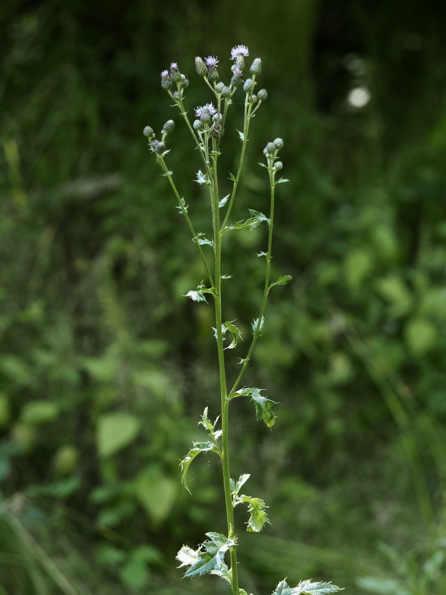

Die unkaputtbare Distel — gefürchtet vom Bauern, geliebt von Schmetterlingen.



Wurzelausläufer bis in die Tiefe
Was oberirdisch wie eine einzelne Distel aussieht, ist meist nur die Spitze eines weitverzweigten Wurzelnetzes, das bis zu 3 Meter tief und mehrere Meter weit reichen kann. Aus jedem Wurzelstück können neue Triebe wachsen — daher gilt sie als hartnäckigstes Ackerunkraut. Mahd oder Pflug helfen kaum: Sie zerschneiden die Wurzeln in viele neue Pflanzen.
Schmetterlings-Magnet
Trotz ihrer schlechten Reputation als Unkraut: Auf den Korbblüten der Acker-Kratzdistel landen mehr Schmetterlingsarten als auf vielen Zierpflanzen. Tagpfauenauge, Distelfalter, Schwalbenschwanz — sie alle nutzen sie als Nektartankstelle. Wer auf einem Wegrand eine blühende Kratzdistel entdeckt, sollte fünf Minuten warten — fast garantiert sieht man Falter.
Wissenswertes & Merksätze
Erkennungszeichen
Zweihäusig (männliche und weibliche Pflanzen getrennt). Blätter wechselständig, am Rand stark stachelig. Blütenkörbchen klein (1,5–2 cm), zahlreich, hellpurpur.
Verwechslung mit anderen Disteln
C. arvense hat KEINEN stacheligen Stängel (im Gegensatz zur Lanzett-Kratzdistel C. vulgare). Wer den Stängel anfassen kann, ohne sich zu pieken: Acker-Kratzdistel.